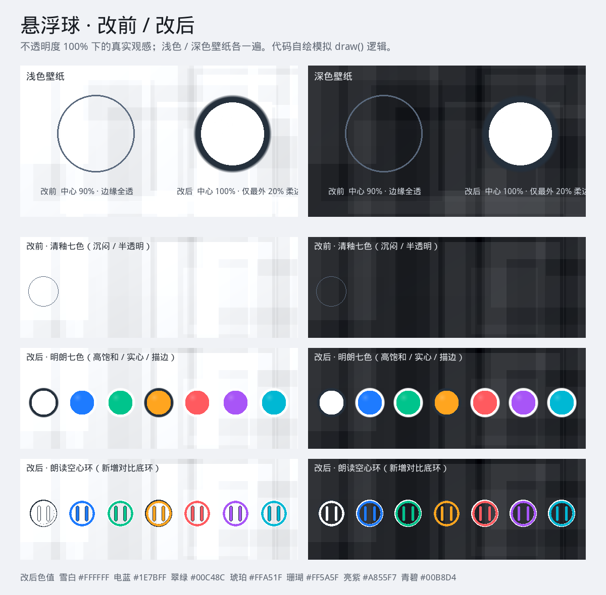

看得清 KanDeQing
ANDROID · 无障碍 · 两个独立小球 · 开源免费
按住放大 ，念给你听 。
屏幕边上两个小球，各管各的、都能单独拖到顺手的位置：白球管放大和点字朗读，绿喇叭球念你刚复制的内容。给还看得见、但看得很吃力的人。
不联网 不上传
不用 OCR 不学手势
两个球 明朗七色 真不透明
当前版本 3.9.23 （versionCode 53）· Android 7.0+ · 装完开一次无障碍即可 · 新版可直接覆盖安装
两个独立球 白球放大 + 点字朗读，绿球读剪贴板
诊断与日志 「更多」页可查看 / 复制 / 导出 / 清空
AOCI 认知索引 随 Git 受管，不进 APK 但管源码
三个动作，两颗球
白球用自己的样子告诉你它在干什么；绿球只管复制的内容。两个球都能单独拖，互不干扰，没有双击、不抢手势 。
按住白球 · 放大
画面跟着手指放大，挪到哪看到哪，松手还原。球心始终贴着触点。
点白球再点字 · 朗读
点一下球变实心，再点屏幕上那段字，从这句开始念。再点球就停。
点绿球 · 念剪贴板
刚复制的一段话，点一下绿喇叭球就念。验证码、过短的内容会跳过。
转圈 / 两竖 · 状态
等待出声时小点转圈，朗读中变环加两竖。七种高饱和颜色随你挑。
两个开关在「朗读」页： 「复制朗读」默认开（关掉绿球就收起）；「复制后自动朗读」默认关。
Android 10 起系统限制后台读剪贴板，自动读属尽力而为 —— 点一下绿球最稳 。
不透明度拉到 100% 现在是真不透明；「更多」页有诊断与日志 ，只记状态和字数、不记正文。
为什么找不到第二个
把「实时放大」「点哪读哪」和「复制完就能听」做进同一个无障碍服务、两颗独立球里，我们目前没有找到同类开源项目。常见方案各自只解决一半。
方案 放大 点哪读哪 复制朗读 要学手势 联网 / OCR
系统放大 / 放大镜 App ✅ ❌ ❌ 部分 否 Select to Speak / TalkBack ❌ 部分 ❌ 要学 否 OCR 选区朗读类 ❌ ✅ ❌ 要框选 截图 + OCR 剪贴板朗读类 ❌ ❌ ✅ 否 否 看得清 ✅ ✅ ✅ 点 / 按住 / 点绿球 都不需要
刻意只走 Android 官方无障碍树和 ClipboardManager：不截图、不做 OCR、不引入模型。换来点一下就出声、零网络权限；代价是图片里和游戏自绘的字读不到。这是选的路，不是没修完。
3.9.23 · 球色与不透明度重做
代码自绘预览，不是真机截图。先出「改前 / A 明朗 / B 霓虹 / C 糖果」四套候选在浅色与深色壁纸上各画一遍，逐张看过、不合适就改；定稿时发现朗读竖线在浅壁纸上发白，又改成球色填充 + 深色描边重出。

定稿 · 明朗七色 / 不透明度 100% 真不透明 / 对比描边 / 朗读底环 改前 + 三套候选 · 改前那排在浅色壁纸上几乎看不见，最终选 A 明朗
这一版还改了： 安装包文件名统一为 kandeqing-v<版本>.apk，
仓库 40 个历史包同步改拼音名（字节不变），订阅里每条一眼分得清谁是谁；
仓库接入 AOCI 认知索引，源码改动由 SHA-256 Baseline 受管。
3.9.21 那次「清釉」低饱和配色已被本版明朗七色取代 ，旧预览不再展示，避免误以为还是当前方案。
项目认知层 · AOCI
仓库里有一份随 Git 受管的认知索引（aoci.txt / aoci.meta.txt /
aoci.code.txt / AGENTS.md / .aoci/）。
它不进安装包 ，但记录每个源码文件的职责、强关系与「推不出、删了就会改错」的硬约束；
源码 SHA-256 基线会在自检里检测漂移，改了源码没更新认知会被挡在提交前。详见
docs/aoci.md 。
从系统层面就传不出去
不是「我们承诺不上传」，是这个 App 根本没申请上网权限。
屏幕读到的字、你复制的内容，只在内存里活几秒
日志只记软件自己的状态和字数，不记任何读到的文字
验证码、过短文本、纯数字会被剪贴板朗读跳过
没有第三方 SDK、没有统计、没有广告、没有账号
源码可查，MIT 协议，随便审
看完整隐私说明
<uses-permission android:name=
Two balls. Three actions.
Hold the white ball to magnify the screen and follow your finger; tap it , then tap any text to hear it read aloud from that sentence; tap the green speaker ball to hear what you just copied. No internet permission, no OCR, no account, no gestures to memorize — only the official Android accessibility tree and ClipboardManager, on device. Since 3.9.23 the seven ball colors are high-saturation and 100% opacity is truly opaque. Built for people who can still see, but strain to read.
Read the English README →
看得清 3.9.23 · MIT License · 免费开源 ·
GitHub ·
下载 ·
订阅 ·
反馈
如果它帮到了你，去 GitHub 点个 ⭐ Star —— 没有推广预算，这是它唯一能被更多需要的人看见的方式。